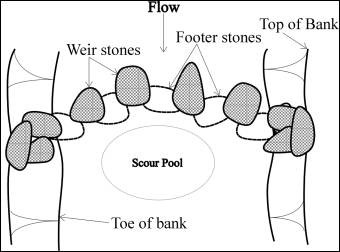

Rock Vortex Weir
What is it?
Vortex weirs are instream structures constructed from rock used to direct streamflow and control stream grade. These structures are also constructed to create variable flow velocities and provide areas for fish passage. These structures are used in streams with predominantely gravel and cobble substrates.

(diagram from The Stormwater Manager's Resource Center)
Conservation Benefits
- Creates a downstream scour pool which can be utilizied by fish and other aquatic organisms
- Prevents disruption of sediment transport
- Provides instream habitat for fish and other aquatic organisms
- Reduces streambank erosion and redirects flow to the center of the stream
What does it include?
Vortex weirs are constructed out of rock. Rock size and placement will depend on stream depth, location in the stream, and baseflow. Footer stones are placed along the bottom of the stream to support the second level of stone (weir stones). The weir stones are places on top of the supporting footer stones and spaced at about a distance of half the average weir stone diameter. Stones should be large enough to not be dislodged in moderate storm events.
Rock Vortex Weir Links
- Rock vortex weirs (p 133; Center for Watershed Protection)
- Rock vortex weirs ( The Stormwater Manager's Resource Center)
Rock Vortex Weir Bibliography
- Martens et al. 2010. Effectiveness of redesigned water diversion using rock vortex weirs to enhance longitudinal connectivity for small salmonids. North American Journal of Fisheries Management 30: 1544-1552.